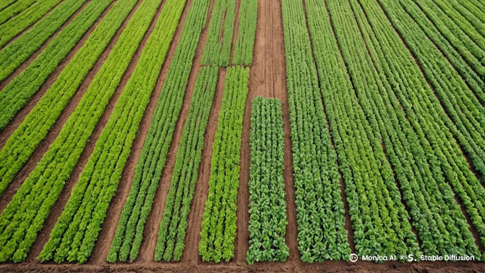

Consejos para un cultivo eficiente y exitoso
Estos consejos prácticos pueden ayudarte a mejorar tus cultivos y cuidar mejor de tus plantas:

Riego adecuado
Recuerda regar tus plantas en las horas de la mañana o la tarde para evitar que el sol queme las hojas.

Suelo bien cuidado
Haz pruebas periódicas de tu suelo para saber si necesita nutrientes adicionales. ¡La salud del suelo es clave!

Protección contra plagas
Usa métodos naturales para controlar las plagas, como las trampas o los insectos beneficiosos.

Silvopastoreo
Integración de árboles y arbustos con la producción ganadera para mejorar la biodiversidad y la fertilidad del suelo.

Rotación de cultivos
Planta diferentes cultivos en la misma área en distintas temporadas para mejorar la calidad del suelo.

Asociación de cultivos
Siembra cultivos complementarios juntos para maximizar la productividad y controlar plagas de manera natural.